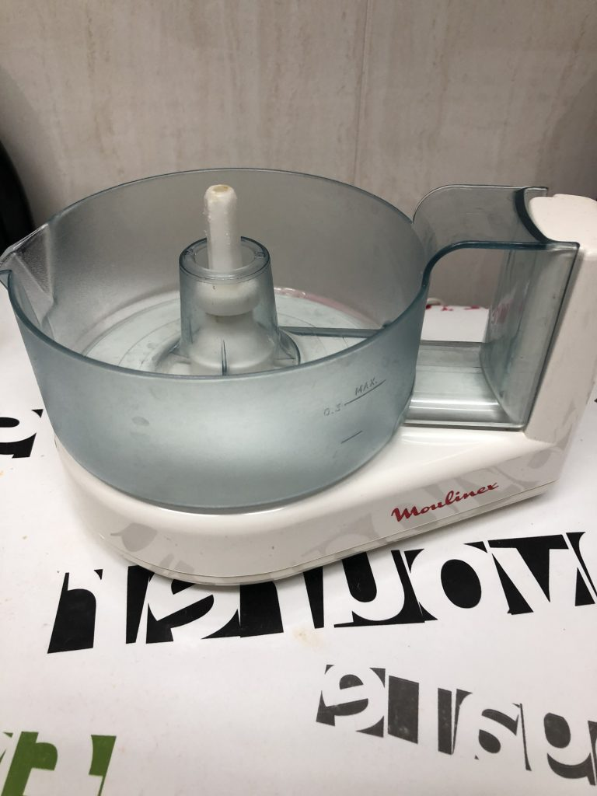

Recuperacion de un Exprimidor Vintage
Procedemos a la Recuperación de un Exprimidor vintage con tecnología en 3D, después 30 años de servicio que ha dado este exprimidor , un modelo antiguo, pero que sigue funcionando de una forma muy correcta pero perdimos la pieza extractora, por lo que ya no se podía utilizar , entonces pensamos en mejorarlo con una impresora 3D creando una nueva pieza extractora en 3D.
El exprimidor:

Después de descartar la compra de un nuevo exprimidor, pensé en buscar una solución con la impresora 3D y decidí intentar buscar una pieza nueva del cabezal extractor.
No tenia mucha esperanza de encontrar algún diseño ya creado, por que dicho extractor solo se fabricó en España y hace muchos años, pero buscando por paginas de diseños , encontré un proyecto con un cabezal muy parecido en thingiverse el cual usé como base, pensando que tendría que hacer bastantes modificaciones
Después de un par de prototipos, ajustando el tamaño y modificando el ancho interior para pieza del motor, ya conseguí la versión final para imprimir en PETG.
Aquí tenemos la pieza final Impresa en PETG, es un material apto para uso alimentario y compatible con el lavavajillas
Las modificaciones que s han realizado en la pieza original han sido la reducción del tamaño a 120mm y reducción del agujero.
Es bastante sorprenderte la cantidad de modelos que existen en Internet para poder imprimir o simplemente poder usar a tu gusto.
Para la impresión se ha utilizado una Ender 3 modificada y PETG de Amazon Basics.